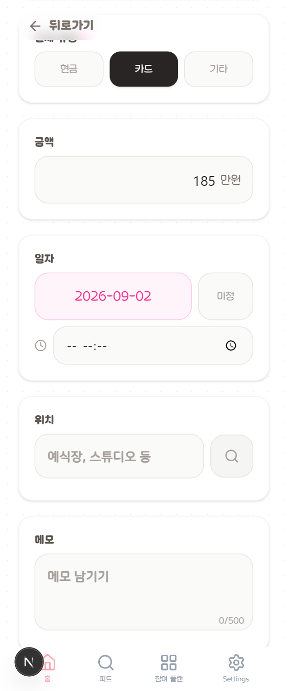

C안 · 07
플랜 추가
카드 8장을 시트 한 장으로 합칩니다. 웹은 이미 그렇게 바꿨고
(docs/concepts/add-plen-a1-sheet.html) 폰만 뒤처져
있습니다. 지금은 카드마다 테두리·그림자·여백이 붙어 실제로 채우는
칸보다 껍데기가 더 큽니다.

본식 촬영
제목을 누르면 고칠 수 있어요
제목이 면으로
지금은 첫 카드가 "제목" 입력입니다. 이 화면에서 가장 먼저 정해지고 끝까지 안 바뀌는 값이라 면에 올립니다 — 아래로 스크롤해도 무엇을 만들고 있는지 보입니다.
카드 8장 → 시트
구분선과 84px 라벨 열로 짭니다. 세로가 절반 가까이 줄어, 지금은 두 번 스크롤해야 닿는 저장 버튼이 한 화면 안으로 들어옵니다.
저장 버튼 고정
지금은 목록 맨 끝에 있어 탭바에 가려집니다. 시트 아래에
sticky 로 붙입니다.
지키는 것
단계형 흐름은 그대로입니다 — 결제 유형을 고르기 전에는 금액·장소
칸이 나오지 않습니다(scripts/feed.cjs 의 프리필 확인이 이
순서를 전제합니다). 날짜 미정이면 시각 입력을 감춥니다.
시각을 지울 때는 필드를 빼지 말고 빈 문자열을 보냅니다 —
PATCH 시맨틱상 빼면 "변경 없음"입니다.
카테고리 검색
지금의 하드코딩 substring 매칭은 그대로 둡니다. OpenSearch 연동은
미래 작업이고(docs/OPENSEARCH_INTEGRATION.md) 화면 구조와
무관합니다.